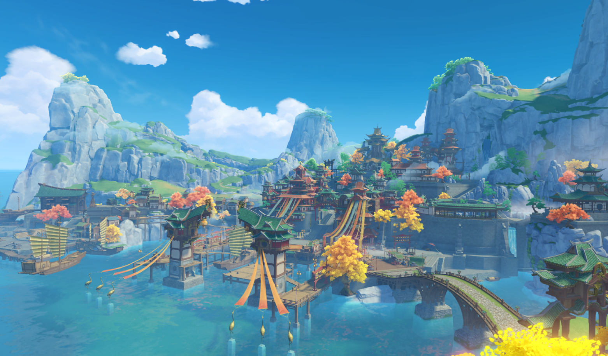

Liyue Harbor
The sprawling, prosperous merchant city that serves as the heart of the Liyue region. Governed by the Qixing, it is known as the "City of Contracts" where ships gather from all corners of Teyvat. It is famous for its bustling docks, lantern-lit streets, and the annual Rite of Descension.
Best for: Shopping & culture